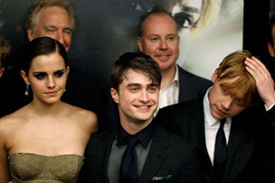
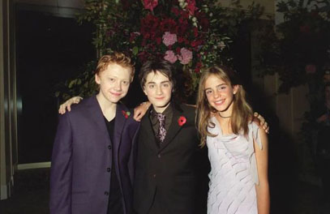
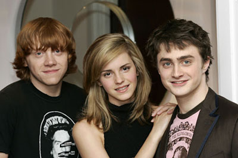

El rodaje de la saga de películas de Harry Potter fue una experiencia únicaque marcó la vida de los actores principales y creó una amistad duradera entre ellos.
Cuando Daniel Radcliffe, Emma Watson y Rupert Grint fueron seleccionados para interpretar a Harry, Hermione y Ron respectivamente, ninguno de ellos podía prever la magnitud del fenómeno cultural que estaban a punto de experimentar. Comenzaron a trabajar juntos a una edad temprana, compartiendo largas horas en el set, aprendiendo juntos y enfrentando los desafíos de dar vida a personajes tan queridos por millones de personas en todo el mundo. A lo largo de los años de rodaje, la camaradería entre los actores principales creció de manera orgánica. Compartieron momentos de alegría y dificultades, desde largas sesiones de maquillaje hasta escenas de acción intensas. Esta experiencia compartida, combinada con el hecho de que pasaron una parte significativa de su juventud trabajando juntos, contribuyó a la formación de un vínculo especial entre ellos.
Fuera del set, los tres jóvenes actores también pasaron tiempo juntos, explorando la ciudad de Londres y disfrutando de actividades típicas de adolescentes. A medida que crecían, enfrentaban desafíos personales y profesionales, pero siempre se apoyaban mutuamente.
Aunque el rodaje de Harry Potter ha terminado, la amistad entre Radcliffe, Watson y Grint perdura. A pesar de sus ocupadas agendas profesionales, todavía se reúnen ocasionalmente y demuestran un afecto genuino el uno por el otro. Su experiencia compartida en la saga de Harry Potter no solo los unió como colegas, sino que también los convirtió en amigos cercanos para toda la vida.
  
Biografía: Nacido el 23 de julio de 1989 en Fulham, Londres, Daniel Jacob Radcliffe saltó a la fama mundial interpretando a Harry Potter en la exitosa serie de películas basadas en los libros de J.K. Rowling. Comenzó su carrera actoral a una edad temprana y continuó actuando en el teatro y en películas después de Harry Potter.
Relación actual: Radcliffe sigue siendo activo en la actuación, habiendo protagonizado varias películas y obras de teatro. En cuanto a su relación con sus coestrellas de Harry Potter, mantiene una relación amistosa con ellos, aunque no siempre están en contacto regular debido a sus carreras individuales.
Biografía: Emma Charlotte Duerre Watson nació el 15 de abril de 1990 en París, Francia. Al igual que Radcliffe, Watson encontró fama interpretando a Hermione Granger en la serie de películas de Harry Potter. Después de la serie, continuó actuando en películas, además de involucrarse en el activismo por la igualdad de género y la educación.
Relación actual: Watson ha seguido siendo una figura prominente en el cine y el activismo. En cuanto a su relación con sus colegas de Harry Potter, ella también mantiene una relación amistosa con ellos. A menudo comparten apoyo mutuo en sus proyectos personales y profesionales.
Biografía: Rupert Alexander Lloyd Grint nació el 24 de agosto de 1988 en Harlow, Essex, Inglaterra. Interpretó a Ron Weasley en la serie de películas de Harry Potter. Después de Harry Potter, continuó actuando en películas y televisión, así como involucrándose en proyectos de producción.
Relación actual: Grint ha mantenido una carrera actoral estable desde Harry Potter, apareciendo en varias producciones. En cuanto a su relación con Radcliffe y Watson, aunque no son inseparables, han expresado en diversas ocasiones que tienen un vínculo especial debido a la experiencia compartida de crecer juntos en el set de Harry Potter. Se han reunido ocasionalmente en eventos públicos y tienen un respeto mutuo por sus carreras individuales.
¡Te ofrecemos los siguientes tres videos con una mirada exclusiva del detrás de cámaras de la saga de Harry Potter! En estos interesantes videos, tendrás la oportunidad de adentrarte en el mundo misterioso y encantador que cautivó a millones de personas en todo el mundo. Desde los primeros días de casting hasta el último día de filmación